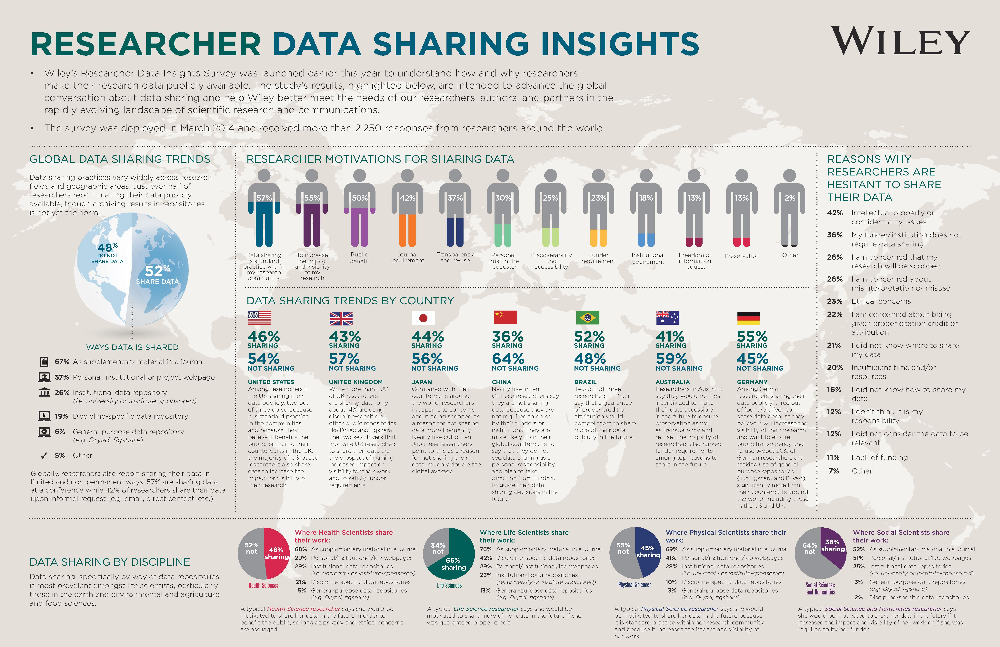
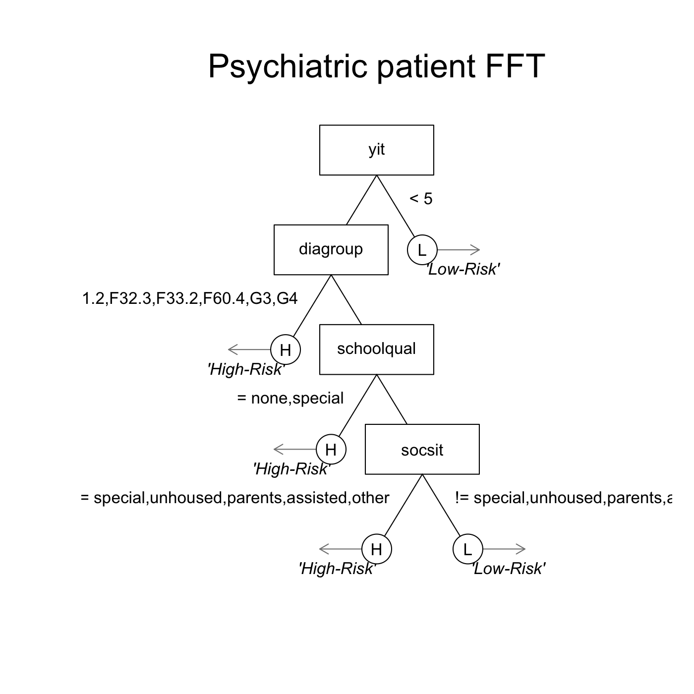
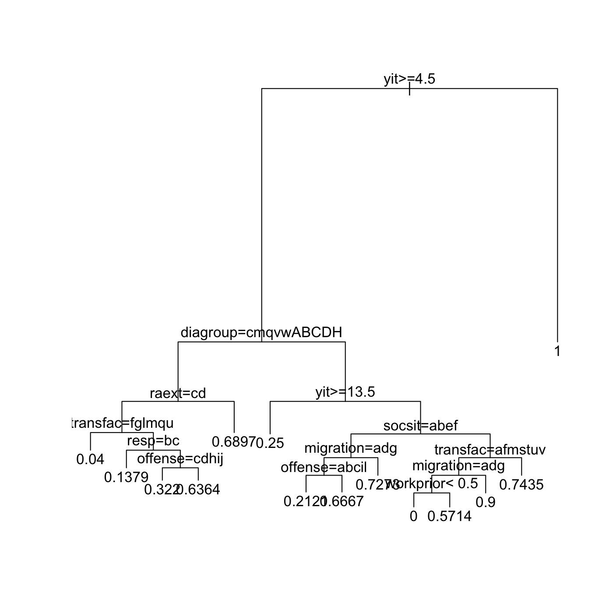

- Todd Hare
- Philip Topler
Christian Ruff
R is a tool for open, efficient research
- Story: asking for data
- Problem: Our data management process is scattered.
- Solution: An interconnected system that ties a thread to each stage of the research process
- Replicable, documented, shareable.
- If you're going to spend the time to collect data and write a paper, you should also dedicate time to making the data available and as useable as possible.
- Stages of research:
- Open source quotes.
- Markdown
- Sharing ideas and code online with rpubs.
- Programming online experiments with Shiny.
- Writing papers with Markdown or Sweave
- Documenting code with an R package (and OSF)
- phillips2014competition package
Making good decisions with R
- FFTrees package
- Simulation results
- Predicting patient release decisions
- FFTrees package
Conclusion
- R
Simply your life with R. From making decisions to sharing and documenting research
Or, how I learned to stop worrying and love R
Nathaniel Phillips
A love letter to R
Many reseearch topics, but one thread
- Wisdom of crowds within one mind,
- Bayesian reasoning.
- Decision making under competition
- Fast and frugal decision trees
One thread: R
- Formulize theoretical predictions with simulations
- Document and share my data and analyses
- Visualize data in a transparent, and interesting, way
- Construct simple decision making tools (fast and frugal decision trees)
Asking for data
- Towards the start of my PhD, I requested data from someone. Here was the response:
"This data is pretty old [It was from a 5 year old publication] and it would take me a while to find it. If you can collaborate with a more senior researcher, and have a specific research question [I did], I might be able to locate it."

The data -- analysis -- writing link
- For many researchers, while the publication is important to share, the data and analyses details are not.
- After publication, the raw data are now 'old' (or are kept for personal use)
- An old boys club -- "Only established researchers, who might benefit me, can get the data"
A solution: sharing data as an R package
- Store everything in an R package.
- Data, data descriptions, analyses, tutorials
- Share the package at the time of publication (before someone asks for it)

Example: Phillips et al. (2014)

Phillips et al. (2014)

Phillips et al. (2014)

Phillips et al. (2014)

Phillips et al. (2014)

Phillips et al. (2014)

Phillips et al. (2014)

Phillips et al. (2014)

Phillips et al. (2014)
This is all the code you need to access the data
install.packages("https://goo.gl/q6GvBk",
repos = NULL,
type = "source")
Example: Phillips et al. (2014)

Example: Phillips et al. (2014)

Example: Phillips et al. (2014)

Example: Phillips et al. (2014)

A bad plot!

Example: Phillips et al. (2014)

Competitive decision making under uncertainty
Phillips et al. (2014). Rivals in the dark: How competition influences search and decisions under uncertainty
Advantages of an R package
- Data are immediately available and fully documented.
- Analyses are always connected to the data.
- Explain data, models and analyses with vignettes.
- Not just good for others, but also for your future self
# Get the data, documentation, and analyses
install.packages("https://goo.gl/q6GvBk",
repos = NULL,
type = "source")
Making good decisions
- R is not just good for documenting and sharing research, it can also help you to make better, faster decisions. Here's how:
Predicting patient outcomes
- How can we predict which patients are at risk for psychiatric treatment failure?
If you know who is at risk, you can do targeted care, plan and allocate resources.
Baden Werttemberg DATASET
1101 patients, 46 cues (age, sex, diagnosis, drug history, etc...)
Linear regression finds 12 significant cues (out of the original 46)

Fast and Frugal tree
- A fast and frugal decision tree (FFT) is the simplest possible decision tree (Martignon et al., 2008).
- Easy to understand, consistent, requires little information, can be calculated 'in the head'
FFTs have been used to predict depression (Jenny et al., 2013), terrorist attacks (Garcia, 2016), and bank failure (Aikman et al., 2014; Neth et al., 2014)
Can an FFT create a simple, interpretable model of patient success?

FFTrees
- There is no off-the-shelf method to construct FFTs.
- Create
FFTrees, an easy-to-use R package that constructs, visualizes, and implements FFTs.

Getting FFTrees
# Step 0: Install and load FFTrees
install.packages("FFTrees")
library("FFTrees")
# Step 1: Create the trees
patient.fft <- FFTrees(formula = fds.63.crit ~.,
data = fds.63.data)
# Step 2: View summary statistics
print(patient.fft)
# Step 3: Visualise the tree
plot(patient.fft)
A forensic FFT

A forensic non-frugal tree

How accurate can a simple tree be?
- The tree is simple, but how accurate can it be?
Prediction simulation
- Cross-validation prediction simulation.
- Compare the performance of fast and frugal trees created by
FFTreesto regression and (non-frugal) decision trees.
How accurate can a simple tree be?

Aggregate simulation prediction results

Phillips, Neth, Gaissmaier & Woike (under review)
Aggregate simulation prediction results

Aggregate simulation prediction results

FFT conclusions
- Simple decision strategies can be extremely effective, even for complex tasks. R, along with
FFTreescan help.
What have we learned.
- Open science is the way forward.
- R can help you promote and share your work in a transparent, effective way
- Make simpler, better decisions with
FFTrees
Collaborators
Joerg Rieskamp (University of Basel)
Ralph Hertwig (MPI for Human Development)
Yaakov Kareev (Hebrew University of Jerusalem)
Judith Avrahami (Hebrew University of Jerusalem)
Wolfgang Gaissmaier (University of Konstanz)
Hansjoerg Neth (University of Konstanz)
Jan Woike (MPI for Human Development)

Simply your life with R. From making decisions to sharing and documenting research
Website: https://ndphillips.github.io
Email: Nathaniel.D.Phillips.is@gmail.com
FFTrees Package: install.packages("FFTrees")
yarrr package: install.packages("yarrr")
YaRrr! The Pirate's Guide to R: www.thepiratesguidetor.com